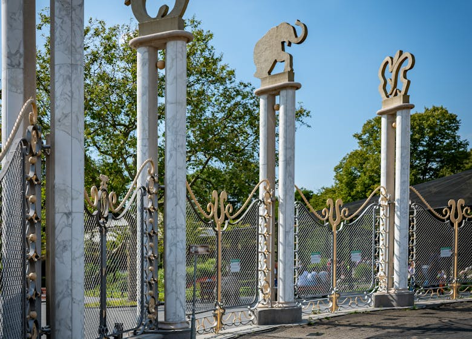

Beleven, Beschermen, Blijdorp
Maak het verschil - jouw bezoek draagt direct bij aan onze missie.
Plan je bezoek
Koop je tickets direct online!
Koop je tickets Word abonneeWij veranderen van dierentuin naar organisatie voor natuurherstel
Onze transformatie van klassieke dierentuin naar een organisatie die zich inzet voor natuurherstel, weerspiegelt onze toewijding aan een grotere missie. Sluit je aan bij ons verhaal en help mee aan het creëren van een betere toekomst voor onze planeet. Met elk bezoek steun je het herstel van de natuur, zowel binnen als buiten de Diergaarde.
Lees hier meer

Nu in Blijdorp
Kom op kraambezoek in de dierentuin! Heb jij al kennisgemaakt met onze nieuwe bewoner, giraffejong Antoon? En wist je dat onze rode panda-tweeling, Yindi en Ravi, steeds vaker hun nieuwsgierige snuitjes laten zien? Dit mag je niet missen! Kom snel langs en bewonder al dit jonge dierenleven van dichtbij.
Bezoek Antoon, Yindi en RaviKom beleven, leer beschermen
Ontdek Blijdorp

Haal alles uit je bezoek met onze app!
- Bekijk de dagschema's, voedermomenten en evenementen.
- Vind restaurants, toiletten en verblijven makkelijk op onze kaart.
- Leer meer over onze dieren, planten en inspanningen voor natuurbehoud.
Wat we doen
Diergaarde Blijdorp zet zich in voor soort- en natuurbehoud van wereldwijde soorten en gebieden.
 Behoud van bedreigde diersoorten Onderhouden van onze Rijksmonumenten Onderzoek voor natuurbehoud Beschermen van dier- en plantsoorten wereldwijd Onze missie Over BlijdorpMaak kennis met de 10 soorten die we gaan redden
We hebben tien soorten gekozen als ambassadeurs voor onze beschermingsinspanningen. Elk dier vertegenwoordigt een unieke leefomgeving en wordt geconfronteerd met verschillende bedreigingen. Door onze inspanningen te richten op deze soorten, kunnen we een domino-effect van positieve verandering over de hele wereld creëren.
Onze missieHelp ons beschermen, steun ons
Met elke donatie en vorm van steun draag je bij aan het voortbestaan van Diergaarde Blijdorp.
Particulier doneren Zakelijk donerenNieuws
Meer nieuwsBoek een bijzondere locatie met impact
Ontdek de Diergaarde op een totaal andere manier tijdens uw evenement. Van bedrijfspresentaties tot netwerkevenementen, en jubileumvieringen; alles is mogelijk.
Plan je event